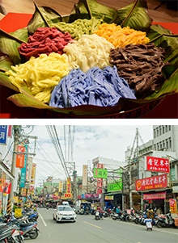
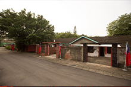

龍岡圖書館 → 龍岡米干&忠貞商圈 → 馬祖新村眷村文創園區 → 壢景町 → 中平路故事館 → 桃園燈會
龍岡圖書館
龍岡圖書館設計將「有機｣的概念導入建築，讓風、光、水、綠回應城居者對大自然的嚮往。此座被名列為「全台最美｣的圖書館，簡約造型如一本巨書，大面留白牆面，打造如美術館的視覺質感，舘內空間設計則採用大量木質元素讓人不自覺停下腳步，同時結合大面窗設計讓建築與戶外綠意模糊了界限，充沛的光線更讓館內每一處都適合閱讀。

龍岡米干&忠貞商圈
忠貞商圈是由1950年代撤退來台的滇緬軍民在龍岡地區落地生根，為了生計，許多滇緬移民賣起了家鄉味，雲南米干、雲南豌豆粉、涼拌青木瓜絲，及雲南大薄片等，飄洋過海後發揚光大，成了當地最具特色的美食料理。
龍岡米干以100%在來米漿淋在大鍋上，薄薄一片蒸熟後，再用大骨熬湯，放上肉片與現煮蛋包，加上自製的醬汁，即是一碗讓人吃過就難忘的米干。

馬祖新村眷村文創園區
享有「桃園將軍村」美名的馬祖新村，並非居民來自馬祖而得名，而是蔣總統夫人宋美齡帶領勞軍團前往馬祖慰問時，為穩定軍心，安置駐守在前線官兵在台眷屬求，而建造了現在的馬祖新村。新村採棋盤式道路並搭配魚骨式村舍配置，為自給自足的半封閉式眷村聚落，近年，透過電影節、眷村文化節及文創市集等活動，重現令人懷念的眷村味。
壢景町
壢景町是日式警察宿舍群之一，歷經近八十年光陰仍保存完整，曾見證台灣首次民主街頭運動「中壢事件」，是書寫城市記憶的重要建築，經過文化局重新修復後，於108年11月15日正式開館營運。包含共有三棟建築，分別設有藝文展演空間、餐飲空間及公民教育空間，形成一個特色及藝文園區，供遊客體驗日式建築及文化發展。
中平路故事館
中平路故事館是早期公務員日式宿舍，為一棟充滿歷史韻味的日式雙併建築，因建物內包含屋瓦、窗櫺、拉門、樑柱等建材都是日治時期的原物料，從屋況完整的保存可看出日治時代當地居民的生活軌跡，經過修復後，結合藝文展覽、文化體驗和文創商品，並有提供團體參觀導覽的服務，深入故事館的每處角落，帶領著遊客傾聽老屋歷史記憶及一窺日治時期到農業時代的中壢生活景象。
桃園酒廠 → 坑口彩繪村 → 桃園機場第二航廈戶外景觀台&玩藝大街 → 青塘園 → 華泰名品城 → 桃園燈會
桃園酒廠
桃園酒廠是北部擁有最大產出率的酒廠，酒廠旁公園有著酒甕裝置藝術，入口步道葡萄藤蔓環繞，綠樹林立，充滿悠然品酒氛圍。同時，酒廠是全台第一家現代化、也是唯一生產日式清酒的釀製廠，廠內詳盡介紹悠久釀酒歷史，並可看到酒廠最具代表性的產品－「玉泉清酒｣。廠內的「酒銀行｣，即是大眾熟知的酒窖，中式婉約的室內空間，營造品酒吟釀的愉悅。
坑口彩繪村
坑口彩繪村位在具有百年歷史的蘆竹「誠聖宮」旁，在紅瓦農舍的街道上就可以欣賞以在地農村特色入畫的童趣風格。
彩繪村共分成四大區塊，遊客順著一條龍式的建築入內，有如走入時光隧道般豐富多彩，從幾乎與原物大小相同的水牛、雞、鴨等動物，三合院、老牛車、灶腳，超擬真農村場景，遊客除可和彩繪景點互動外，同時也可體驗早期農村風情。
桃園機場第二航廈戶外景觀台&玩藝大街
桃園機場第二航廈全新完工的戶外景觀台採開放式設計可讓遊客以超近距離觀賞飛機滑行起降，體驗全新視覺、聽覺的感官雙震撼，並讓國內、外旅人抵達桃機時留下「最驚豔的台灣印象」。
同時，「義美吉盛台灣玩藝大街」復刻大稻埕風貌，大街內滿滿懷舊風，包含多樣美食、伴手禮可供遊客挑選，同時，還設有全台首間機場膠囊旅店讓旅行者選擇與體驗。
青塘園
「青塘園」在台灣高鐵桃園站附近，原本是一座農業灌溉用的埤塘，有調節防洪的功能，經過規劃之後，成為都市民眾的親水空間；設置親水緩坡、觀景平台、木棧道、人行步道及戶外劇場等多元的遊憩空間，是都市裡一個寧靜、休閒的好去處，還曾經榮獲台灣公共建築相關大獎！
華泰名品城
坐落在高鐵桃園站旁，擁有交通地利之便，為全台首座標榜美式露天購物村的outlet「華泰名品城」，以美式鄉村風格營造出悠閒的購物氛圍，讓人有如置身國外購物中心般。
富岡鐵道藝術園區 → 雅聞魅力博物館 → 郭元益糕餅博物館 → 桃園燈會
富岡鐵道藝術園區
富岡鐵道藝術園區涵蓋範圍包含富岡車站、水井頭廣場、富岡老街、伯公岡公園、民生池埤塘公園及富岡車輛基地等處，除製作10個以上公共藝術作品外，並將園區融入當地環境中做為整體規劃，讓喜歡鐵道文化的背包客、年輕人及市民朋友，只要搭火車到富岡車站下車即開始感受鐵道文化藝術氛圍，騎腳踏車漫遊各景點與公共藝術，細細欣賞體驗富岡風光。
雅聞魅力博物館
雅聞魅力博物館是雅聞生技結合旗下四大產業，包括化妝品、保健食品、內衣及SPA的精緻型博物館，全方位的美麗服務及DIY教室，更贏得女性消費者的青睞。
全區佔地三千坪，分為四大產業博覽區、彩妝精油體驗區、香氛保養品DIY教室等。空間設計上，特意留下慢活與美麗人生的舒適感，運用庭園景觀、香草、綠樹、水池等自然元素，營造盎然生機，漫步其中，享受花茶點心，更能體會青春永駐的秘訣。
郭元益糕餅博物館
郭元益糕餅博物館楊梅館是全台唯一的宮殿式建築優良觀光工廠，從優雅的園林景緻中，踏入糕餅博物館的餅食天地，認識珍存之台灣餅食文化與本土民俗儀禮，悠遊糕餅業第一座綠建築之綠標生活館，以節能減碳、環境永續為主軸，提供嶄新視覺科技與互動綠色體驗，蘊含著郭元益珍惜環境及健康主張的用心堅持。
角板山行館 → 角板山商圈 → 三民蝙蝠洞 → 慈湖 → 桃園燈會
角板山行館
角板山行館園區包含戰備隧道、蔣公行館、雕塑公園、樟腦收納所等多個特色景點。角板山戰備隧道隨著軍事色彩淡去，成為遊客遙想當年戰地風光的好去處。日式建築-樟腦收納所，為現在全台僅存的樟腦廳舍，附近的生態池，可欣賞大量的台灣水龍、燈心草、睡蓮、菖蒲等水生植物構成的盎然景致，頗為愜意。
角板山商圈
角板山商圈以復興區中正路、忠孝路與中山路為主軸，商圈內的酥炸溪蝦、白斬土雞、馬告香腸，舌尖上的原民風味，一樣也不少，道地的泰雅美食及多間人氣餐廳林立，平實價格，頂級食味，跟著滿滿人潮走就對了！別忘了把山間好味帶著走，季節限定必買－水蜜桃、綠竹筍、香菇等農特產和原鄉特有的小米酒，都是高CP伴手禮。
三民蝙蝠洞
三民蝙蝠洞是一處天然形成的巨大岩洞，因洞口上方有泉水灑落，而有水濂洞之美稱。由於蝙蝠洞地形粗獷原始，又位在溪谷旁邊，吸引大批的蝙蝠在此棲息，因而得名稱作「蝙蝠洞」。
慈湖
慈湖分為前、後慈湖，湖岸水色迷人，楊柳垂青頗有江南風光之美，當年蔣先生以此處酷似浙江奉化老家，並對母親思念之情，而命名為慈湖，並闢建行館(閩浙混合式建築)。
園區內的前、後兩潭湖水有溪水相連接，環境優美、四面都有青山環繞，不同季節來訪都能看見不一樣的自然美景！
觀新藻礁生態野生動物保護區 → 白沙岬燈塔&鐘塔廣場 → 觀音區蓮花園休閒農業區各農場 → 桃園燈會
觀新藻礁生態野生動物保護區
觀新藻礁位於觀音區小飯壢溪以南到新屋區後湖溪口以北的沿海，占地約370公頃，除了驚艷於這珍貴的千年地景，豐富的生物多樣性也是觀新藻礁的亮點之一﹔目前共發現有10種藻類、129種動物，動物密度是高美濕地的5倍，香山濕地的8倍，宛如是北台灣的海洋生態博物館。
白沙岬燈塔&鐘塔廣場
白沙岬燈塔位於觀音海岸，西元1901年點燈啟用後，在日治時期就已是台灣著名勝景，歷經百年以上的歲月洗禮，在2001年獲選入列文建會(現今文化部)「台灣歷史建築百景」，燈塔建築本體、圍牆與日治時期的日晷儀2002年公告成為桃園古蹟，是目前保存最完整的日治初期燈塔，迄今仍屹立不搖，守護海上往來船隻。
鐘塔廣場是白沙岬燈塔周遭的必拍景點，地中海風格的建築物，不僅是拍婚紗的好去處，亦是家庭親子遊樂場所。
觀音區蓮花園休閒農業區各農場
蓮花園休閒農業區位於桃園市觀音區近郊為純樸的沿海農業風味的鄉村地區，區內具豐富農業資源、景觀資源及生態資源，以種植蓮花聞名，蓮花季結束後，農戶會接續挖蓮藕，尚有楊梅、瓜果類、稻米、花卉及各式蔬菜。適合規畫半日遊或一日遊。
資料來源：農業易遊網 https://ezgo.coa.gov.tw/zh-TW/Front/Agri/Detail/1529
壽山巖觀音寺 → 奧爾森林學堂&明倫三聖宮 → 土地公文化館 → 桃園站前商圈 → 中壢仁海宮 → 平鎮褒忠祠 → 桃園燈會
壽山巖觀音寺
壽山巖觀音寺舊稱壽山巖寺，俗稱嶺頂廟，於清乾隆七年即已草創，是一座兩進兩護龍的廟宇，中央三開間的前殿與正殿，是大正四年（西元1915年）的風格，為當時名匠陳應彬所重修。前檐廊的蟠龍石柱以觀音石雕成，呈「弓」字彎曲的龍身不在正面而在內側，是其主要特色，並於2013年獲選內政部「臺灣宗教百景」之一，是很有歷史意義的宗教建築物。
奧爾森林學堂&明倫三聖宮
「奧爾森林學堂」位於素有「桃園後花園」美譽的虎頭山公園內，在2012年以不破壞公園內景觀及樹木為原則下，在林木間搭起木製空中步道，同時利用雀榕善於纏繞的特性讓樹木與樹屋共生，打造出充滿生命力的三座「活」樹屋，並以大大小小的貓頭鷹裝飾其中，命名為「奧爾森林學堂」。
明倫三聖宮位於桃園虎頭山麓，下臨虎頭山公園、南崁溪、忠烈祠，供奉關聖帝君、呂純陽帝君、九天司命真君等「三聖恩主」，其建築承襲了傳統寺廟文化的精髓，展現充滿活力的藝術風格。
土地公文化館
桃園區內平均每平方公里就有7座以上的土地公廟，密度高居全國之冠。為推廣土地公信仰文化，桃園設立市首座公有廟宇福德宮﹔館內另常設展出豐富的資源與生動的模擬情境，如歌仔戲台、布袋戲棚、廟埕攤商，使民眾可於此了解桃園歷史、台灣人對這塊土地的情感、廟口文化，與全球多樣的土地公信仰。
桃園站前商圈
桃園站前商圈可說是一處融合了新舊文化的特色商圈，由火車站前中正路延伸至中山路景福宮段的熱鬧商圈，在短短的幾個路口，聚集了流行、時尚、服飾、珠寶、百貨等各種行業，傍晚華燈初上之後，將桃園變成了不夜城，也成了喜愛血拼逛街的採買者發現驚奇、找好東西的絕佳地方。
中壢仁海宮
榮獲內政部臺灣宗教百景第四名的中壢市仁海宮，又稱「新街廟」，創建於清道光6年(西元1826年)，至今已有百餘年歷史，當年由中壢、平鎮、楊梅等13庄聯合興建，初僅供奉觀世音菩蕯，後增奉媽祖娘娘，至同治十年(西元1971年)完工後已歷經五度重修，不但是中壢市最古老的廟宇，也是桃園南區信眾的信仰中心。
平鎮褒忠祠
平鎮褒忠祠建於乾隆五十六年(西元1791年)，主要供奉新埔枋寮義民廟分香而來的義民爺，稱為義民亭。咸豐七年(西元1857年)由地方人士募資擴建規模，更名為褒忠祠。有別於台灣其他義民廟僅設立牌位，褒忠祠塑有全台第一座義民爺金身。